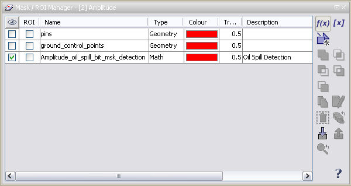

| Bitmask Overlay Window | |
In this window you may activate the overlay of flags and combinations of them on a loaded band image view. Simply activate the checkboxes in the column with the icon to toggle the overlay with that specific flag.

Use the  icon to
create new bitmask expressions. This will also use the Bitmask Expression Editor.
icon to
create new bitmask expressions. This will also use the Bitmask Expression Editor.
Use the  icon to
copy bitmask expressions. This will also use the Bitmask Expression Editor.
icon to
copy bitmask expressions. This will also use the Bitmask Expression Editor.
Use the  icon to
edit
(change name, colour, transparency etc.) a selected bitmask.
Double-clicking on a row has the same effect.
icon to
edit
(change name, colour, transparency etc.) a selected bitmask.
Double-clicking on a row has the same effect.
Use the  icon to
remove a selected bitmask.
icon to
remove a selected bitmask.
Use the  icon to import
bitmask expressions from files and
icon to import
bitmask expressions from files and  to save them.
to save them.
Similarly you can use the  icon to import
and the
icon to import
and the  icon to export
multiple bitmask expressions at the same time.
icon to export
multiple bitmask expressions at the same time.
Use the  and
and  icons to order
the overlay sequence of the bitmasks.
icons to order
the overlay sequence of the bitmasks.